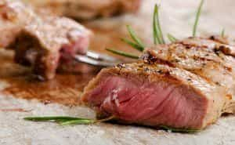

Sponsored Article is ROK's official account that publishes sponsored articles from advertisers. If you are interested hiring a sponsored article for your site, product, or service, visit our advertising page.


The following article was sponsored by Henry Tran
Despite what conventional fitness wisdom will tell you, your ability to get ripped isn’t determined by how strict your diet is or how many hours you spend slaving away at the gym… It’s actually dictated by how much testosterone you have in your body.
That’s right, the big “T” does much more than regulate your sex drive. In fact, this master male hormone helps build muscle, enhances your bone strength, your heart, your memory, and most notably, helps get you the ripped six pack abs you’ve always wanted.
However for some younger men, their T-levels are in dire need of attention and here’s a simple explanation for why:
Statistics now show that men who are ages 19-35 have an average of 36% less testosterone than men of this age group did three decades ago.
And the reason for this should come as no surprise. These days, young men are indoors more, they sleep less, and they eat far more junk. These lifestyle factors all contribute to the massive dump the average guy’s T levels are taking and in some cases, result in early symptoms of low-T (a serious problem that men over 40 are prone to).
So if you’ve been struggling with excess body fat that just won’t seem to go away, you can be sure that it’s got something to do with your master male hormone – which is why I created a video presentation that shows men exactly what they need to eat to naturally boost their testosterone. To skip ahead to the video guide to boosting testosterone, click the link below now:
VIDEO: What Men Need To Eat To Boost Testosterone
But before you raid GNC’s test-booster aisle, you should know that you can summon all of the hormone-boosting power you need to get the ripped six pack abs you’ve always wanted through food.
Eating a diet composed of key test-boosting nutrients won’t just unlock your ability to get a rock hard body – but it will also give you the edge to maintaining amped up test levels through your 30’s, 40’s and beyond.
This sticky stuff contains boron, a mineral associated with high testosterone levels, and nitric oxide, which opens up blood vessels to improve the strength of your erection.
This cruciferous vegetable is contains indole-3-carbinol, which blocks and even reduces levels of the female hormone estrogen, making testosterone more effective.

A known aphrodisiac, asparagus contains folic acid, potassium and vitamin E, which are all essential for healthy testosterone production.
Aside from containing high levels of magnesium, vitamin B and omega-3s for healthy testosterone production, this fatty fish has been researched for it’s ability to drop kick Sex Hormone Binding Globulin (SHBG) – a sneaky hormone that renders your testosterone useless.
When you’re reaching for a salty snack, reach for pumpkin seeds instead of the potato chips. Not only are these seeds inexpensive, but their high levels of zinc can help push your testosterone levels up. Try the Magnesium Man Bowl recipe for a fresh and filling salad that is loaded with these male hormone making morsels.
It’s long been proven that men with high intakes of monounsaturated fat – found in foods like avocado, nuts and plant based oils – had lower LDL cholesterol (the bad cholesterol) and more testosterone.
Full of zinc, B vitamins, and protein, nut butters provide the vitamins, minerals and essential compounds necessary to create testosterone. If you’re a sucker for peanut butter and chocolate, then you’ve got to try this T-Nut Butter Cup recipe that you can whip up using just your microwave for a killer test-boosting snack.
According to what research has shown us, Vitamin D can help boost testosterone levels by up to 90%. If you’re a guy who doesn’t get much sunshine (which is the most effective way to absorb Vitamin D) then you need to be sure you’re getting more tuna in your diet.

Cut or ground, beef offers an excellent dietary source of protein, fatty acids and zinc which are necessary for testosterone and hormone production and maintenance. But most important to note is that beef packs the most important fatty acid of all when it comes to boosting your T: Saturated fats. Get started beefing up your test levels with Man Maker Chili.
The allicin compound found in garlic lowers levels of the stress hormone cortisol, in turn allowing testosterone to be produced in greater amounts. Mince it up raw and add it to your meats and/or veggies for best effects.
In research from Finland, scientists gave men 15 grams of whey protein both before and after resistance exercises. Muscle biopsy showed an increase in testosterone production of up to 25 percent, which was maintained for 48 hours. If you’re looking for the most pure form of whey for upping your test levels, then you need to use this grass fed protein powder.
Cholesterol is the precursor to testosterone and if you’re under the impression that you should be avoiding it, then you better believe that your T is suffering. But the good news is, two eggs pack the daily cholesterol count you need for optimal test health. It’s like your doctor never told you: 2 eggs a day keeps the low-T away.
Dark leafy greens like spinach and kale are proven to lower estrogen levels, and are also rich in magnesium and vitamins C and E – all of which are essential testosterone building blocks. You can make kale appeal to your taste buds with this simple Portuguese Kale Soup recipe.
Seafood in general has a variety of health benefits, but shrimp in particular contains high levels of vitamin D – one of the most crucial vitamins for your T. Get your fill of Vitamin D with this Shrimp Ceviche recipe.
Oranges and grapefruit are two of the best known citrus fruits for lowering the stress hormone cortisol, which is good news for your T. They are also loaded with vitamin A, yet another crucial element required for testosterone production.
So there you have it – The top 15 best foods for enhancing your natural test production. Now that you know what types of foods you need to be eating to jack your test levels up, you’ll definitely want to explore the complete recipe guide that’s custom tailored for a man’s needs. This recipe guide not only shows you how to make 30 minute man-meals, but you’ll also be able to prep an entire week’s worth of pro-testosterone meals that will help you drop fat and get the ripped body you’ve always wanted.